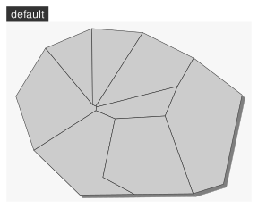
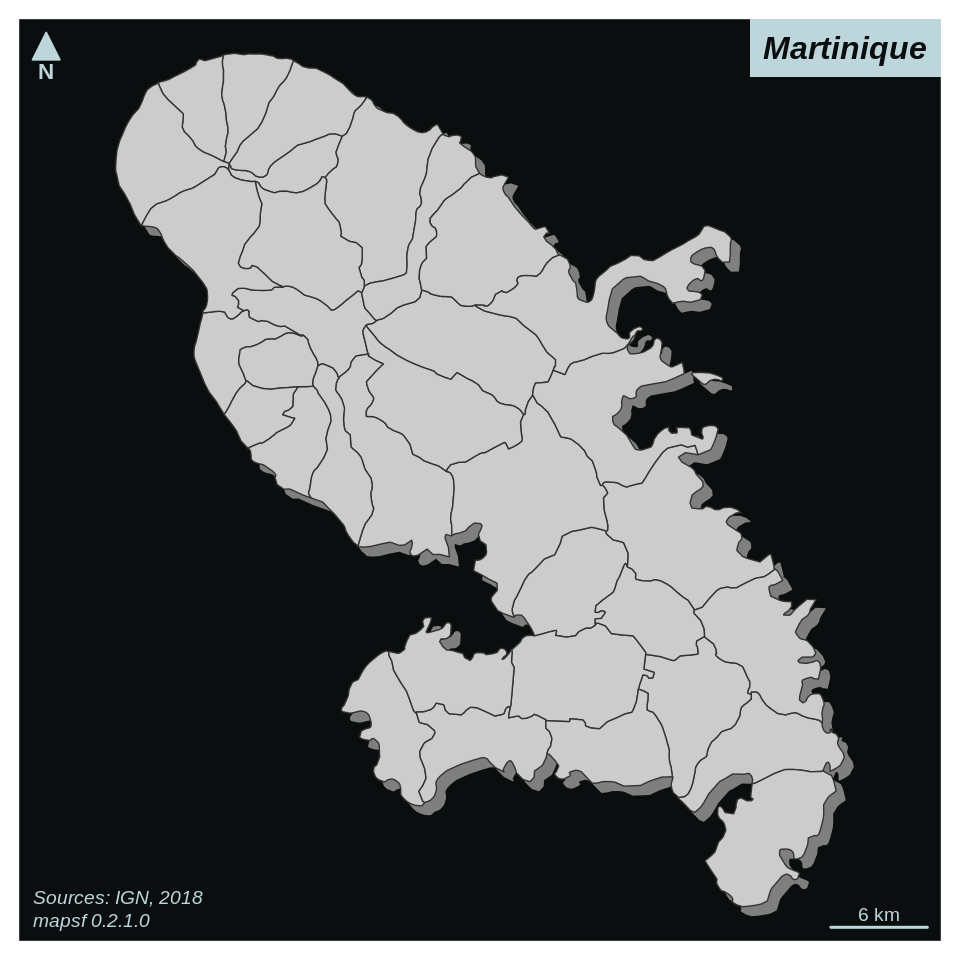
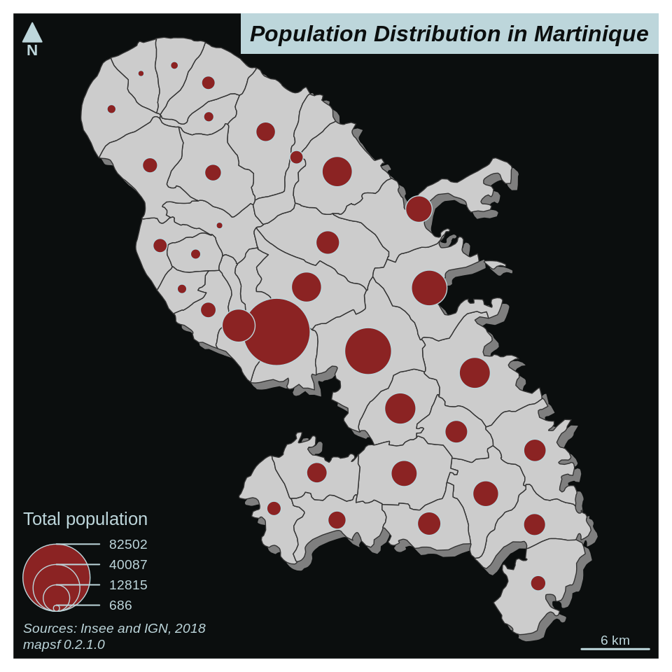
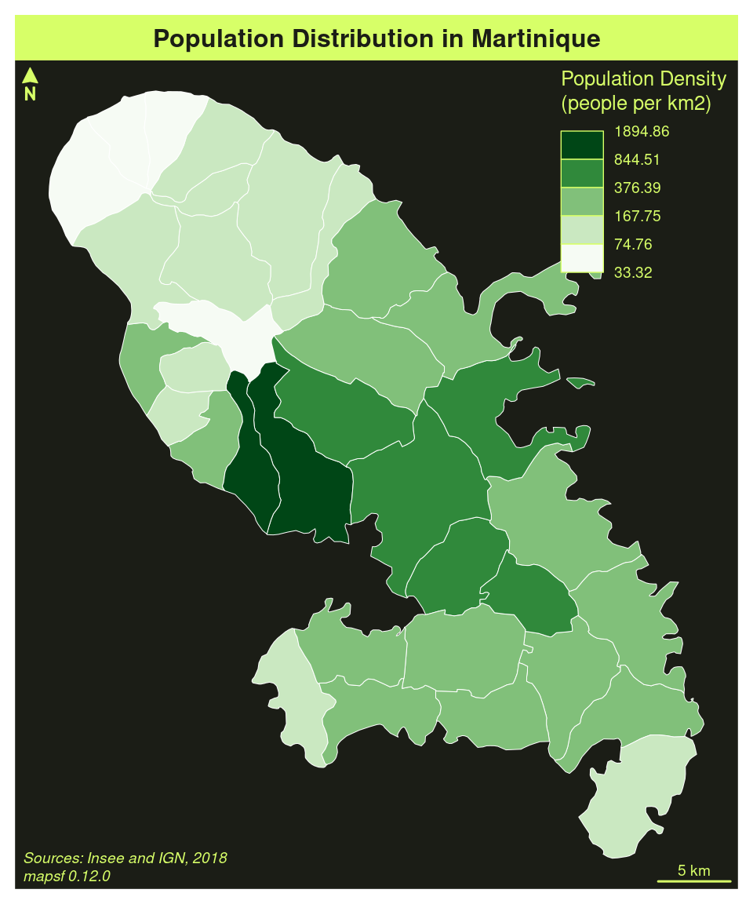
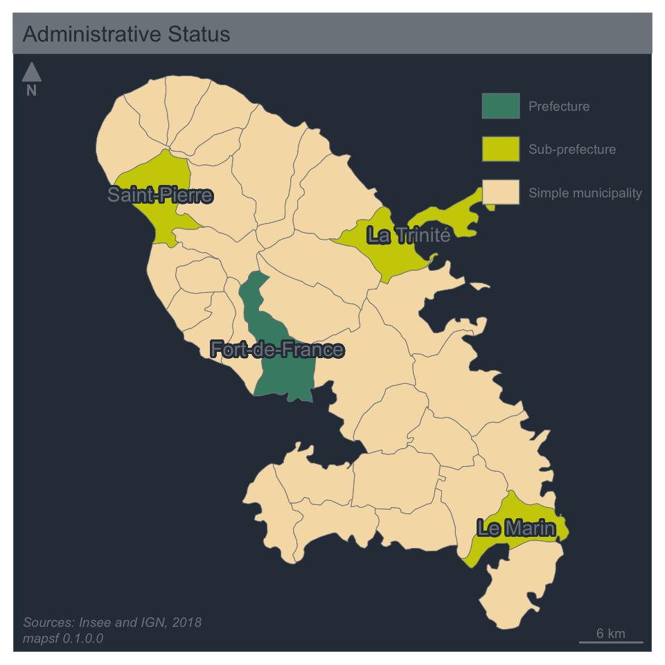
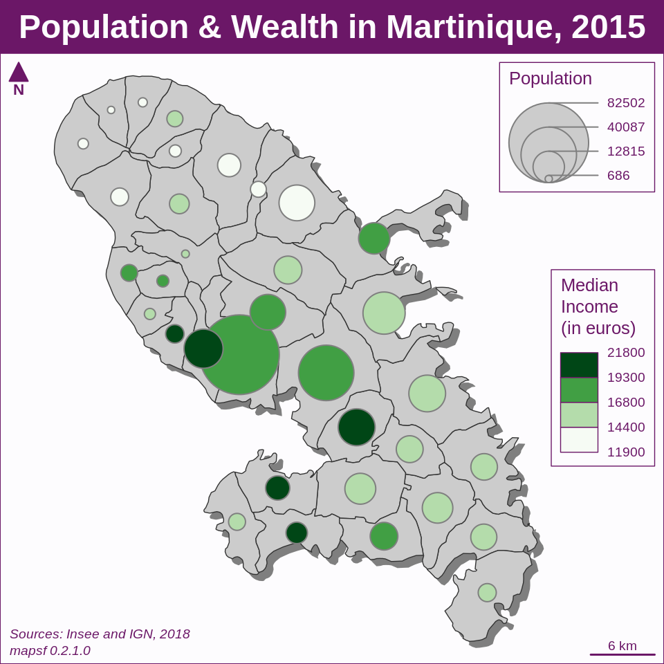
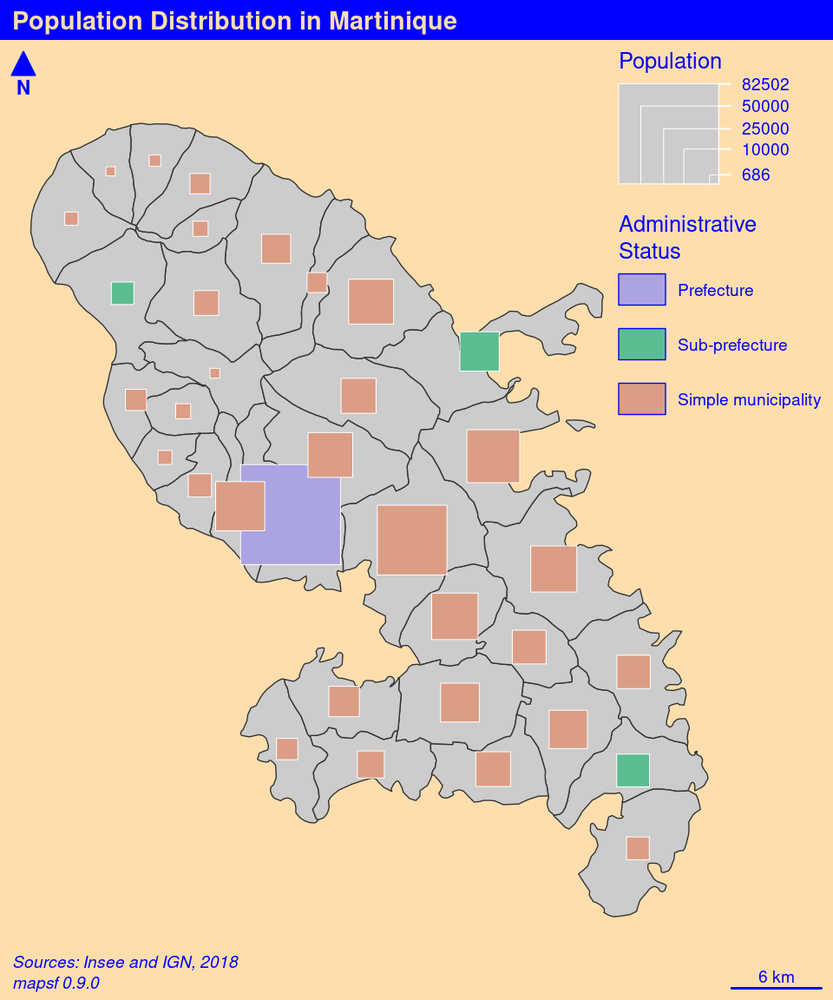
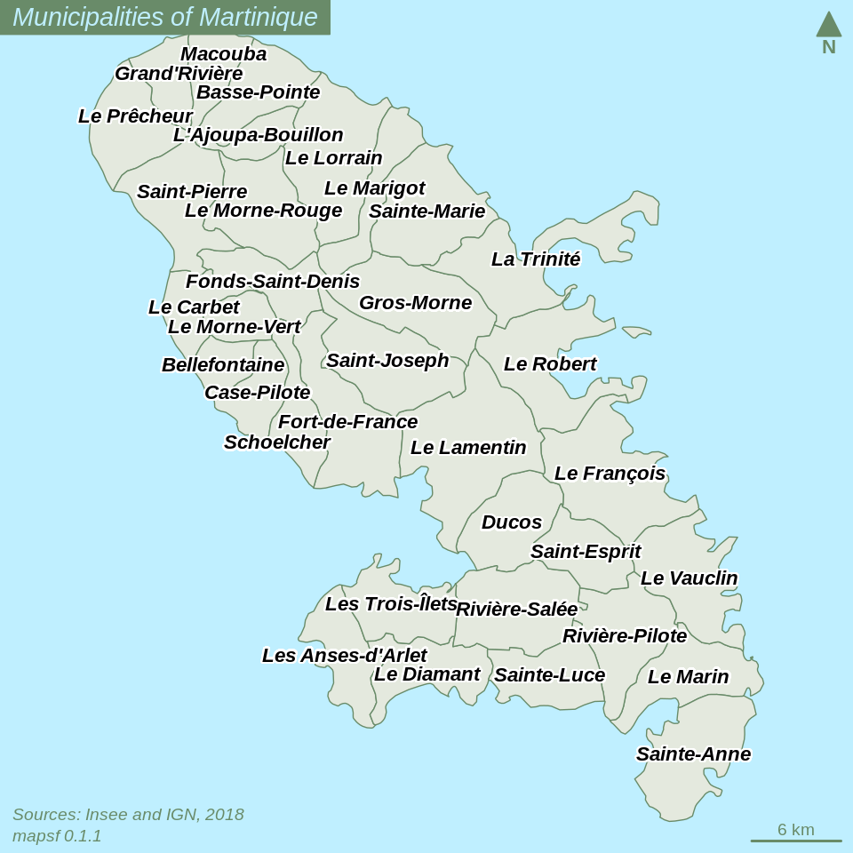

Introduction
The aim of mapsf is to obtain thematic maps with the
visual quality of those build with a classical mapping or GIS
software.
Users of the package could belong to one of two categories: cartographers willing to use R or R users willing to create maps. Therefore, its functions have to be intuitive to cartographers and ensure compatibility with common R workflows.
mapsf uses sf objects
to produce base graphics.
mapsf functions can be classified in the following
categories :
-
Symbology
mf_map()displays map layers on a georeferenced plot. It has three main arguments:-
x, ansfobject; -
var, the name(s) of a variable(s) to map; -
type, the map layer type.
Many parameters are available to fine tune the cartographic representations. These parameters are the common ones found in GIS and automatic cartography tools (e.g. classification and color palettes used in choropleth maps, symbols sizes used in proportional symbols maps…).
-
Map Layout
Along with the cartographic functions, some other functions are dedicated to layout design (e.g. legends, scale bar, north arrow, title, credits…).Utility Functions
A set of functions is dedicated to the creation of spatial objects (e.g. links creation) or other utility tasks (e.g. color palette management, class intervals extraction, sample dataset import…).
Main Features
Symbology
The type column indicates the value to use for the
type argument in mf_map(x, var, type). The
data column displays the relevant data types for each
map types. The cartography column indicates the
corresponding function in cartography.
| map type | type | data | polygon | point | line | cartography | |
|---|---|---|---|---|---|---|---|
| Base Map | "base" |
geometry |  |
 |
 |
- | |
| Proportional Symbols | "prop" |
stock |  |
 |
 |
propSymbolsLayer() |
|
| Typology | "typo" |
category |  |
 |
 |
typoLayer() |
|
| Choropleth | "choro" |
ratio |  |
 |
 |
choroLayer() |
|
| Graduated Symbols | "grad" |
stock |  |
 |
 |
- | |
| Symbols | "symb" |
category |  |
 |
- | ||
| Proportional Symbols + Typo | "prop_typo" |
stock & category |  |
 |
|
propSymbolsTypoLayer()
|
||
| Proportional Symbols + Choro | "prop_choro" |
stock & ratio |  |
 |
propSymbolsChoroLayer() |
||
| Symbols + Choro | "symb_choro" |
category & ratio |  |
 |
- | ||
Map Layout
 |
| name | cartography |
|---|---|
mf_title() |
- / layoutLayer()
|
mf_arrow() |
north() |
mf_credits() |
- / layoutLayer()
|
mf_scale() |
barscale() |
mf_layout() |
layoutLayer() |
mf_annotation() |
- |
mf_label() |
labelLayer() |
Themes
mf_theme() defines a map theme. It sets the margins of
the figure, a background color, a foreground color and some parameters
of the title. A set of theme is included in the package and it is
possible to create custom ones.
|  |  |
 |
 |
 |
 |
 |
 |
 |
 |
 |
Export
The mf_export() function exports maps in raster (.png)
or vector formats (.svg). The size of the exported map will fit the
height/width ratio of a spatial object.
Datasets
Several datasets are embedded in the package:
-
A GeoPackage of Martinique municipalities can be imported with
mf_get_mtq()(or viasf::st_read()).Sources: Base comparateur de territoires (upload date: 2018-09-25) & ADMIN EXPRESS-COG (2018 edition).
Citation: Insee and IGN, 2018
-
Fields:
- INSEE_COM: Municipality identifier
- STATUS: Municipality administrative status
- LIBGEO: Municipality name
- POP: Total population, 2015
- MED: Median disposable income adjusted per equivalent household member, in euros, 2015
- CHOM: Unemployed population, 2015
- ACT: Active population, 2015
-
A csv file of professional mobility flows between Martinique municipalities.
Sources: Flux de mobilité - déplacements domicile-lieu de travail (upload date: 2018-08-01)
Citation: Insee, 2018
-
Fields:
- i: Municipality of residence identifier
- j: Municipality of workplace identifier
- fij: Flows of workers (employed population, 15 y.o. or more, 2015, only flows > 100)
- sj: Administrative status of the workplace municipality
Examples of thematic maps
Base map
mf_init() is designed to initiate a map centered on a
specific extent (x bbox). The theme argument
allows to select a theme.
mf_shadow() plots the shadow of a polygon layer.
mf_map(x, type = "base") displays sf
objects geometries.
mf_layout() add a complete layout to the map (title,
credits, north arrow, scale bar). Each layout elements can also be set
separately (with mf_title(), mf_credits(),
mf_arrow() and mf_scale()).
library(mapsf)
# import the sample data set
mtq <- mf_get_mtq()
# Initiate a base map
mf_init(x = mtq, theme = "iceberg")
# Plot a shadow
mf_shadow(mtq, add = TRUE)
# plot municipalities
mf_map(mtq, type = "base", add = TRUE)
# layout
mf_layout(
title = "Martinique",
credits = paste0(
"Sources: IGN, 2018\n",
"mapsf ",
packageVersion("mapsf")
)
)
Proportional Symbols
mf_map(x, var, type = "prop") displays symbols with
areas proportional to a quantitative variable (stocks). The
inches argument is used to customize the symbols sizes.
library(mapsf)
# import the sample data set
mtq <- mf_get_mtq()
# Initiate a base map
mf_init(x = mtq, theme = "iceberg")
# Plot a shadow
mf_shadow(mtq, add = TRUE)
# plot municipalities
mf_map(mtq, add = TRUE)
# plot population
mf_map(
x = mtq,
var = "POP",
type = "prop",
inches = 0.25,
col = "brown4",
leg_pos = "bottomleft2",
leg_title = "Total population"
)
# layout
mf_layout(
title = "Population Distribution in Martinique",
credits = paste0(
"Sources: Insee and IGN, 2018\n",
"mapsf ",
packageVersion("mapsf")
)
)
Choropleth Map
In choropleth maps, areas are shaded according to the variation of a
quantitative variable. They are used to represent ratios or
indices.mf_map(x, var, type = "choro") displays choropleth maps .
Arguments nbreaks, and breaks allow to
customize the variable classification. mf_get_breaks()
allows to classify data outside of the function itself. Colors palettes,
defined with pal, can be created with
mf_get_pal() or you can use palette names from
hcl.pals().
Use mf_theme() to set a theme without plotting
anything.
library(mapsf)
# import the sample data set
mtq <- mf_get_mtq()
# population density (inhab./km2) using sf::st_area()
mtq$POPDENS <- 1e6 * mtq$POP / sf::st_area(mtq)
# set a theme
mf_theme("green")
# plot population density
mf_map(
x = mtq,
var = "POPDENS",
type = "choro",
breaks = "geom",
nbreaks = 5,
pal = "Greens",
border = "white",
lwd = 0.5,
leg_pos = "topright",
leg_title = "Population Density\n(people per km2)"
)
# layout
mf_layout(
title = "Population Distribution in Martinique",
credits = paste0(
"Sources: Insee and IGN, 2018\n",
"mapsf ",
packageVersion("mapsf")
)
)
Typology Map
mf_map(x, var, type = "typo") displays a typology map of
a qualitative variable. val_order is used to set the
modalities order in the legend.
mf_label() displays labels on the map.
library(mapsf)
# import the sample data set
mtq <- mf_get_mtq()
# set theme
mf_theme("dark")
# plot administrative status
mf_map(
x = mtq,
var = "STATUS",
type = "typo",
pal = c("aquamarine4", "yellow3", "wheat"),
lwd = .5,
val_order = c(
"Prefecture",
"Sub-prefecture",
"Simple municipality"
),
leg_pos = "topright",
leg_title = ""
)
# labels for a few municipalities
mf_label(
x = mtq[mtq$STATUS != "Simple municipality", ], var = "LIBGEO",
cex = 0.9, halo = TRUE, r = 0.15
)
# layout
mf_layout(
title = "Administrative Status",
credits = paste0(
"Sources: Insee and IGN, 2018\n",
"mapsf ",
packageVersion("mapsf")
)
)
Proportional Symbols using Choropleth Coloration
mf_map(x, var, type = "prop_choro") creates a map of
symbols that are proportional to values of a first variable and colored
to reflect the classification of a second variable.
expandBB argument in mf_init() allows to
expand the map space. Here, we increase the space available on the right
of the map to avoid overlaps between the legends and the map.
library(mapsf)
# import the sample data set
mtq <- mf_get_mtq()
# set theme
mf_init(x = mtq, theme = "candy", expandBB = c(0, 0, 0, .15))
# Plot a shadow
mf_shadow(mtq, add = TRUE)
# Plot the municipalities
mf_map(mtq, add = TRUE)
# Plot symbols with choropleth coloration
mf_map(
x = mtq,
var = c("POP", "MED"),
type = "prop_choro",
border = "grey50",
lwd = 1,
leg_pos = c("topright", "right"),
leg_title = c("Population", "Median\nIncome\n(in euros)"),
breaks = "equal",
nbreaks = 4,
pal = "Greens",
leg_val_rnd = c(0, -2),
leg_frame = c(TRUE, TRUE)
)
# layout
mf_layout(
title = "Population & Wealth in Martinique, 2015",
credits = paste0(
"Sources: Insee and IGN, 2018\n",
"mapsf ",
packageVersion("mapsf")
),
frame = TRUE
)
Proportional Symbols using Typology Coloration
f_map(x, var, type = "prop_typo") creates a map of
symbols that are proportional to values of a first variable and colored
to reflect the modalities of a second qualitative variable.
library(mapsf)
# import the sample data set
mtq <- mf_get_mtq()
# set theme
mf_init(x = mtq, theme = "ink", expandBB = c(0, 0, 0, .15))
# Plot a shadow
mf_shadow(mtq, add = TRUE)
# Plot the municipalities
mf_map(mtq, add = TRUE)
# Plot symbols with choropleth coloration
mf_map(
x = mtq,
var = c("POP", "STATUS"),
type = "prop_typo",
symbol = "square",
border = "white",
lwd = .5,
leg_pos = c("right", "topright"),
leg_title = c("Population", "Administrative\nStatus"),
val_order = c(
"Prefecture", "Sub-prefecture",
"Simple municipality"
)
)
# layout
mf_layout(
title = "Population Distribution in Martinique",
credits = paste0(
"Sources: Insee and IGN, 2018\n",
"mapsf ",
packageVersion("mapsf")
)
)
Label Map
mf_label() is dedicated to the display of labels on a
map. The overlap = FALSE argument displays non overlapping
labels.
In this example we have built a custom theme with
mf_theme().
library(mapsf)
# import the sample data set
mtq <- mf_get_mtq()
# set theme
my_theme <- list(
name = "mytheme",
bg = "lightblue1",
fg = "darkseagreen4",
mar = c(0, 0, 0, 0),
tab = TRUE,
pos = "left",
inner = TRUE,
line = 1,
cex = .9,
font = 3
)
mf_theme(my_theme)
# plot municipalities
mf_map(mtq, col = "#e4e9de", border = "darkseagreen4")
# plot labels
mf_label(
x = mtq,
var = "LIBGEO",
col = "black",
cex = 0.7,
font = 4,
halo = TRUE,
bg = "white",
r = 0.1,
overlap = FALSE,
lines = FALSE
)
# layout
mf_layout(
title = "Municipalities of Martinique",
credits = paste0(
"Sources: Insee and IGN, 2018\n",
"mapsf ",
packageVersion("mapsf")
),
arrow = FALSE
)
# north arrow
mf_arrow(pos = "topright")
Links Map
mf_get_links() creates a link layer from an
sf object and a link data.frame (long
format).
mf_map(x, var, type = "grad") displays graduated
links.
We have used leg_pos = "bottomleft2" to display the
legend in the bottom left corner of the map with an extra space to avoid
overlaps between the legend and the credits.
library(mapsf)
# import the sample data set
mtq <- mf_get_mtq()
# import the csv file embedded in mapsf
mob <- read.csv(system.file("csv/mob.csv", package = "mapsf"))
# Select links from Fort-de-France (97209))
mob_97209 <- mob[mob$i == 97209, ]
# create an sf object of links
mob_links <- mf_get_links(x = mtq, df = mob_97209)
# set figure background color
# set theme
mf_init(x = mtq, theme = "dark")
# Plot a shadow
mf_shadow(mtq, add = TRUE)
# Plot the municipalities
mf_map(mtq, add = TRUE)
# plot graduated links
mf_map(
x = mob_links,
var = "fij",
type = "grad",
breaks = c(100, 500, 1000, 4679.0),
lwd = c(1, 4, 8),
leg_pos = "bottomleft2",
leg_title = "Nb. of\nCommuters",
col = "red4",
leg_frame = TRUE
)
# map layout
mf_layout(
title = "Commuting to Fort-de-France",
credits = paste0(
"Sources: Insee and IGN, 2018\n",
"mapsf ",
packageVersion("mapsf")
),
arrow = FALSE
)